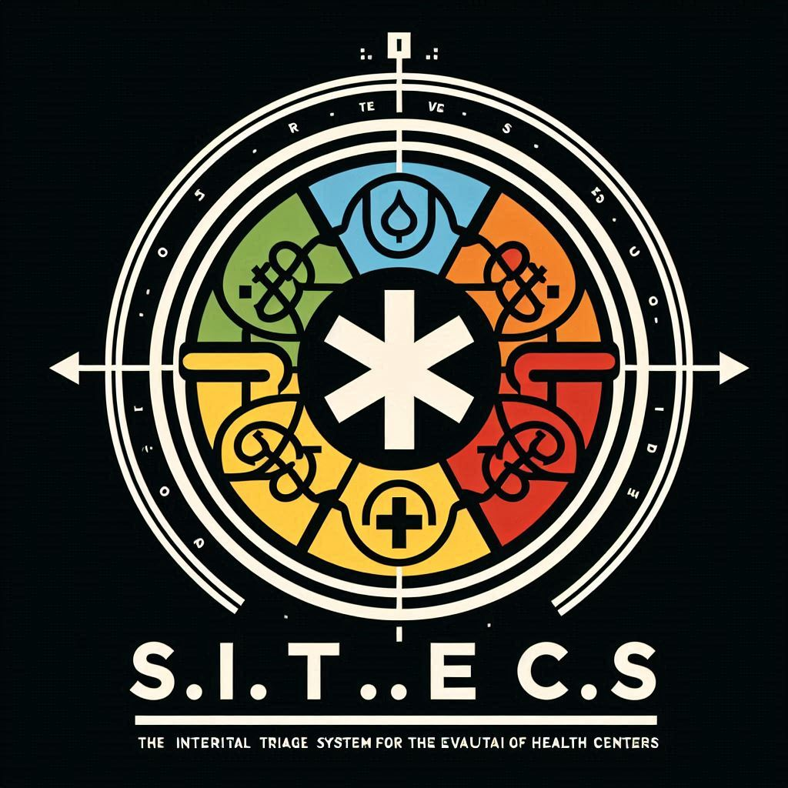
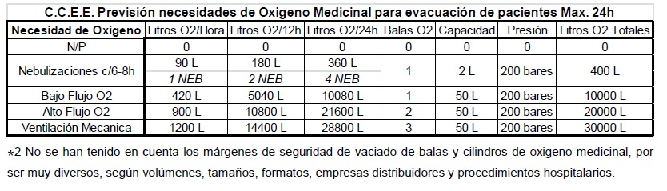
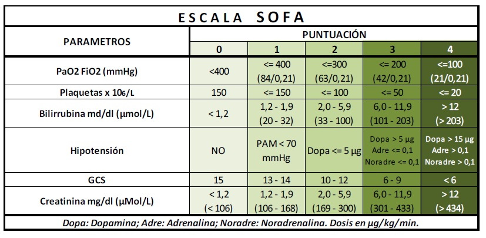
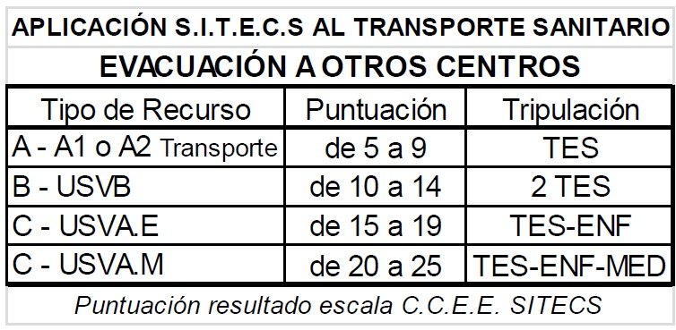

<!DOCTYPE html>
<html lang="es">
<head>
    <meta charset="UTF-8">
    <meta name="viewport" content="width=device-width, initial-scale=1.0">
    <title>SITECS - Sistema Integral de Triaje para Evacuación de Centros Sanitarios</title>
    <style>
        body {
            font-family: Arial, sans-serif;
            margin: 0;
            padding-top: 60px; /* Esto es para el header que no es fijo */
            padding-bottom: 80px;
            background-color: #f4f4f4;
            color: #333;
            scroll-behavior: smooth;
            scroll-padding-top: 70px; /* Asegúrate de ajustar este valor si tu nav es más alta */
        }

        header {
            background-color: #004d99;
            color: white;
            padding: 0.5em 0;
            text-align: center;
            width: 100%;
            top: 0;
            z-index: 998;
            box-shadow: 0 2px 5px rgba(0,0,0,0.2);
        }
        header h1 {
            margin-bottom: 5px;
            font-size: 1.8em;
        }
        .sitecs-highlight {
            color: #ffd700;
        }
        header p {
            font-size: 0.8em;
            margin-top: 0;
            margin-bottom: 10px;
        }

        /* --- NAV (BARRA DE NAVEGACIÓN) --- */
        nav {
            background-color: #003366;
            padding: 0.5em 0;
            text-align: center;
            position: fixed;
            width: 100%;
            top: 0;
            z-index: 1000;
            box-shadow: 0 2px 5px rgba(0,0,0,0.2);
        }
        nav ul {
            list-style: none;
            padding: 0;
            margin: 0;
            display: flex;
            justify-content: center;
            flex-wrap: wrap; /* Importante para que los elementos puedan ir a una nueva línea si no caben */
        }
        nav ul li {
            margin: 0 5px; /* Margen inicial para pantallas grandes */
        }
        nav ul li a {
            color: white;
            text-decoration: none;
            font-weight: bold;
            padding: 3px 0;
            transition: color 0.3s ease;
            font-size: 0.9em; /* Tamaño de fuente por defecto para pantallas grandes */
            white-space: nowrap; /* Asegura que el texto del enlace no se rompa */
        }
        nav ul li a:hover {
            color: #ffd700;
        }
        /* --- FIN NAV --- */

        .container {
            width: 85%;
            margin: 20px auto;
            background-color: white;
            padding: 30px;
            box-shadow: 0 0 10px rgba(0,0,0,0.1);
            border-radius: 8px;
        }
        section {
            padding: 20px 0;
            margin-bottom: 20px;
            border-bottom: 1px solid #eee;
        }
        section:last-child {
            border-bottom: none;
        }
        h1, h2 {
            color: #004d99;
            text-align: center;
            margin-bottom: 25px;
        }
        h3 {
            color: #0056b3;
            margin-top: 25px;
            margin-bottom: 15px;
        }
        p {
            line-height: 1.6;
            margin-bottom: 1em;
        }
        ul {
            list-style-type: disc;
            margin-left: 20px;
            margin-bottom: 1em;
        }
        ol {
            margin-left: 20px;
            margin-bottom: 1em;
        }
        .logo-responsive {
            width: 100px;
            height: auto;
            max-width: 100%;
        }

        /* --- FOOTER --- */
        .footer-info {
            background-color: #003366;
            color: white;
            font-size: 0.8em;
            padding: 15px;
            position: fixed;
            width: 100%;
            bottom: 0;
            z-index: 1000;
            box-shadow: 0 -2px 5px rgba(0,0,0,0.2);
            display: flex;
            flex-direction: column;
            justify-content: center;
            align-items: center;
            box-sizing: border-box;
            text-align: center;
        }
        .footer-info p {
            margin: 2px 0;
        }

        .justificacion-extranjera ul {
            list-style-type: none;
            padding-left: 0;
        }
        .justificacion-extranjera ul li {
            margin-bottom: 0.5em;
            padding-left: 1.5em;
            position: relative;
        }
        .justificacion-extranjera ul li::before {
            content: "§";
            position: absolute;
            left: 0;
            color: #004d99;
            font-weight: bold;
        }
        .marco-legal ul {
            list-style-type: none;
            padding-left: 0;
        }
        .marco-legal ul li {
            margin-bottom: 0.5em;
            padding-left: 1.5em;
            position: relative;
        }
        .marco-legal ul li::before {
            content: "-";
            position: absolute;
            left: 0;
            color: #004d99;
            font-weight: bold;
        }
        .objetivos-generales ul li::before {
            content: "✅";
            margin-right: 8px;
            color: #28a745;
            font-weight: bold;
        }
        .objetivos-especificos ul li::before {
            content: "🔹";
            margin-right: 8px;
            color: #007bff;
            font-weight: bold;
        }
        .triaje-avanzado ul li::before {
            content: "🔹";
            margin-right: 8px;
            color: #007bff;
            font-weight: bold;
        }
        .triaje-primario ul {
            list-style-type: none;
            padding-left: 0;
        }
        .triaje-primario ul li {
            margin-bottom: 0.5em;
            padding-left: 1.5em;
            position: relative;
            font-weight: bold;
        }
        .triaje-primario ul li.verde::before { color: #28a745; }
        .triaje-primario ul li.amarillo::before { color: #ffc107; }
        .triaje-primario ul li.naranja::before { color: #fd7e14; }
        .triaje-primario ul li.rojo::before { color: #dc3545; }
        .triaje-primario ul li.azul::before { color: #007bff; }

        .image-center {
            text-align: center;
            margin: 20px 0;
        }
        .image-center img {
            max-width: 100%;
            height: auto;
            border: 1px solid #ddd;
            border-radius: 5px;
        }
        .download-links ul {
            list-style-type: none;
            padding-left: 0;
        }
        .download-links ul li {
            margin-bottom: 10px;
        }
        .download-links ul li a {
            display: inline-block;
            background-color: #007bff;
            color: white;
            padding: 10px 15px;
            text-decoration: none;
            border-radius: 5px;
            transition: background-color 0.3s ease;
        }
        .download-links ul li a:hover {
            background-color: #0056b3;
        }
        .contact-info ul {
            list-style-type: none;
            padding-left: 0;
        }
        .contact-info ul li {
            margin-bottom: 10px;
        }
        .contact-info ul li a {
            color: #007bff;
            text-decoration: none;
        }
        .contact-info ul li a:hover {
            text-decoration: underline;
        }

        /* --- Media Queries para la barra de navegación --- */

        /* Para pantallas más pequeñas (ej. tablets en vertical, móviles grandes) */
        @media (max-width: 992px) {
            nav ul li a {
                font-size: 0.8em; /* Un poco más pequeño */
                padding: 2px 0; /* Un poco menos de padding vertical */
            }
            nav ul li {
                margin: 0 3px; /* Margen más pequeño */
            }
        }

        /* Para pantallas aún más pequeñas (ej. móviles) */
        @media (max-width: 768px) {
            nav ul li a {
                font-size: 0.7em; /* Aún más pequeño */
                padding: 1px 0;
            }
            nav ul li {
                margin: 0 2px; /* Margen mínimo */
            }
        }

        /* Si es necesario un punto de quiebre aún más extremo */
        @media (max-width: 576px) {
            nav ul li a {
                font-size: 0.65em; /* Muy pequeño para asegurar que quepan */
                /* Considera si a esta resolución es mejor que los elementos se apilen
                   o que el menú se convierta en un menú hamburguesa */
            }
            nav ul li {
                margin: 0 1px;
            }
        }

    </style>
</head>
<body>
    </body>
</html></head>
<body>
    <header>
        
        <h1><span class="sitecs-highlight">SITECS</span></h1>
        <p>Sistema Integral de Triaje para Evacuación de Centros Sanitarios</p>
    </header>

    <nav>
        <ul>
            <li><a href="#introduccion">Introducción</a></li>
            <li><a href="#justificacion">Justificación</a></li>
            <li><a href="#marco-legal">Marco Legal</a></li>
            <li><a href="#objetivos-generales">Obj.Generales</a></li>
            <li><a href="#objetivos-especificos">Obj.Específicos</a></li>
            <li><a href="#triaje-primario">Triaje 1º básico(F.E.P)</a></li>
            <li><a href="#triaje-secundario">Triaje 2º avanzado(C.C.E.E)</a></li>
            <li><a href="#evacuacion-centros">Evacuación a otros centros</a></li>
            <li><a href="#bibliografia">Bibliografía</a></li>
            <li><a href="#descargas">Descargas</a></li>
            <li><a href="#contacto">Contacto</a></li>
        </ul>
    </nav>

    <div class="container">
        <section id="introduccion">
            <h2>Introducción al Sistema SITECS - ¿Qué es S.I.T.E.C.S?</h2>
            <p>SITECS nace para abordar la necesidad de planificación estructurada en la evacuación hospitalaria, una tarea que, a priori, se considera inviable por la complejidad del traslado de pacientes y residentes. Si bien la evacuación horizontal dentro del centro suele contemplarse en los planes de autoprotección, la evacuación vertical y externa requiere criterios específicos y una organización precisa.</p>
            <p>El sistema SITECS establece un modelo de triaje adaptado a situaciones de emergencia en hospitales y centros sanitarios, permitiendo una priorización eficiente de la evacuación en casos donde los recursos son limitados. Se fundamenta en un enfoque científico-médico que supera los métodos tradicionales de evacuación en otros edificios e infraestructuras.</p>
            <p>Además, SITECS facilita la toma de decisiones en escenarios críticos, proporcionando respaldo ético y legal al personal sanitario. Su aplicación optimiza la coordinación en emergencias, asegurando un proceso organizado y seguro para pacientes, familiares y profesionales.</p>
            <p>El modelo de SITECS integra dos niveles de triaje:</p>
            <ul>
                <li>Triaje primario o básico (F.E.P: Facilidad de Evacuación del Paciente)</li>
                <li>Triaje secundario o avanzado (C.C.E.E: Complejidad de Cuidados para la Evacuación y Estancia)</li>
            </ul>
            <p>A través de estos criterios, SITECS determina la prioridad y los recursos necesarios para trasladar a los afectados, ofreciendo parámetros cuantitativos para evaluar y mejorar continuamente el proceso de evacuación.</p>
        </section>

        <section id="justificacion">
            <h2>Justificación</h2>
            <p>La evacuación de hospitales y residencias de mayores se considera, en principio, extremadamente difícil o incluso imposible, ya sea de manera parcial o total, en horizontal o vertical. Sin embargo, la experiencia demuestra que, en situaciones de emergencia, lo que parece inviable puede convertirse en una necesidad real. Además, el fuego no es el único riesgo que amenaza estos centros; existen múltiples escenarios en los que una evacuación organizada puede ser crucial.</p>
            <p>SITECS nace como respuesta a esta problemática, proporcionando un modelo estructurado de triaje específico para la evacuación de centros socio-sanitarios. Si bien esta propuesta no es única ni pionera, su enfoque busca ofrecer una metodología clara y eficiente basada en experiencias previas.</p>
            <p>En España, por ejemplo, la Unidad de Cuidados Intensivos del Hospital Universitario Insular de Gran Canaria ha implementado un sistema de triaje y clasificación de pacientes con el objetivo de ordenar una posible evacuación en caso de emergencia.</p>
            <p>SITECS integra estos conocimientos en un sistema adaptado a las necesidades de los centros sanitarios, garantizando que la evacuación, cuando sea necesaria, se lleve a cabo con criterios precisos, priorización efectiva y respaldo técnico-científico.</p>
            <div class="justificacion-extranjera">
                <p>Fuera de nuestras fronteras existen también diversos modelos y sistemas de triaje estructurado con una similar finalidad, por ejemplo:</p>
                <ul>
                    <li>California. H.I.C.S 2014 – Hospital Incident Command System.<sup>2</sup></li>
                    <li>Florida. Modelo S.T.A.R.T doble: inverso – original.<sup>3</sup></li>
                    <li>Standfor. Sistema T.R.A.I.N (Triage by Resource Allocation for In-Patients).<sup>4</sup></li>
                    <li>Procedimiento de evacuación de hospitales del NHS - National Health Service. Reino Unido.<sup>5</sup></li>
                    <li>Evacuación de hospitales ante desastres. Hospital de Erzurum (Turquía).<sup>6</sup></li>
                    <li>Sistema de clasificación para evacuación de hospitales del Instituto Mejicano de Salud Pública (IMSS).<sup>7</sup></li>
                </ul>
            </div>
        </section>

        <section id="marco-legal">
            <h2>Marco Legal y Normativo</h2>
            <div class="marco-legal">
                <p>SITECS se desarrolla teniendo en cuenta la legislación básica española en materia de Protección Civil y sanidad, así como la normativa específica de prevención de riesgos laborales (P.R.L.) en los centros sanitarios.</p>
                <p>Entre las leyes fundamentales, destacan:</p>
                <ul>
                    <li>Ley 31/1995 de Prevención de Riesgos Laborales, actualizada en 2003, que tiene como objetivo garantizar la seguridad y salud de los trabajadores, estableciendo medidas para la prevención de riesgos.</li>
                    <li>Real Decreto 393/2007, que aprueba la Norma Básica de Autoprotección, aplicable a establecimientos sanitarios con más de 200 camas, donde se exige la elaboración y mantenimiento de un plan de autoprotección. Este plan abarca la identificación de riesgos, las estrategias de evacuación y las medidas de recuperación tras una emergencia.</li>
                </ul>
                <p>Además, el sistema SITECS se alinea con la legislación en Protección Civil, incluyendo el Real Decreto 407/1992 y la Ley 17/2015, que establecen los principios generales de actuación ante emergencias.</p>
                <p>Este marco normativo es esencial para garantizar una gestión adecuada de la evacuación hospitalaria y refuerza la necesidad de protocolos estructurados, asegurando la seguridad tanto de los pacientes como del personal sanitario.</p>
            </div>
        </section>

        <section id="objetivos-generales">
            <h2>Objetivos Generales de SITECS</h2>
            <div class="objetivos-generales">
                <p>SITECS tiene como propósito fundamental optimizar la toma de decisiones en situaciones de emergencia hospitalaria, facilitando un sistema estructurado que agiliza, valida y sistematiza las acciones necesarias para una evacuación ordenada y eficaz.</p>
                <p>Sus objetivos principales son:</p>
                <ul>
                    <li>Optimizar decisiones en situaciones críticas<br>El sistema proporciona una metodología clara y fundamentada para evitar la improvisación en momentos de alto riesgo y estrés. SITECS permite a los equipos médicos y de enfermería tomar decisiones respaldadas por criterios establecidos, asegurando una aplicación rápida y eficiente en la evacuación horizontal y vertical de pacientes.</li>
                    <li>Facilitar la recuperación y vuelta a la normalidad<br>SITECS establece un modelo homogéneo, reproducible y evaluable, que guía a los centros sanitarios antes, durante y después de una emergencia, asegurando una recuperación estructurada y rápida.</li>
                    <li>Integración en los procesos asistenciales habituales<br>El sistema se incorpora dentro de los planes de autoprotección y programas de formación de los centros sanitarios y residenciales, convirtiéndose en una herramienta clave para la evacuación. SITECS debe integrarse en las dinámicas diarias de los distintos servicios y actualizarse periódicamente, idealmente cada 24 horas, para garantizar su eficacia.</li>
                </ul>
            </div>
        </section>

        <section id="objetivos-especificos">
            <h2>Objetivos Específicos</h2>
            <div class="objetivos-especificos">
                <p>SITECS introduce una herramienta de triaje específica para la evacuación hospitalaria, basada en un árbol lógico de decisión que permite evaluar la Facilidad de Evacuación de los Pacientes (F.E.P.).</p>
                <ul>
                    <li>Aplicación rápida y eficiente<br>El sistema está diseñado para ser ágil y fácil de implementar, evitando sobrecargar al personal sanitario en su uso diario. Además, permite su aplicación en centros que no lo tengan previamente implantado y que enfrenten una evacuación inesperada.</li>
                    <li>Sencillo, reconocible y reproducible<br>SITECS utiliza cinco niveles de clasificación, con valores numéricos y colores ya presentes en los sistemas de triaje hospitalario y prehospitalario. Su integración con estos modelos facilita la priorización de evacuación, desde el traslado ordenado del paciente hasta su estancia fuera de la unidad.</li>
                    <li>Gestión del transporte y recursos<br>El sistema no solo determina el orden de evacuación, sino que también define las necesidades de traslado a otros centros, permitiendo asignar los recursos de transporte adecuados según el nivel de prioridad de cada paciente.</li>
                </ul>
            </div>
        </section>

        <section id="triaje-primario">
            <h2>Triaje Primario o Básico - F.E.P: Facilidad de Evacuación del Paciente</h2>
            <p>El sistema SITECS clasifica la Facilidad de Evacuación del Paciente (F.E.P.) en cinco niveles, representados por colores y valores numéricos, facilitando la priorización y gestión eficiente en situaciones de emergencia.</p>
            <div class="image-center">
                
            </div>
            <h3>Clasificación F.E.P.</h3>
            <div class="triaje-primario">
                <ul>
                    <li class="verde">VERDE (1) – Evacuación MUY FÁCIL: El paciente puede evacuar sin ayuda.</li>
                    <li class="amarillo">AMARILLO (2) – Evacuación FÁCIL: Puede evacuar con poca ayuda (bastón, muletas, andador o acompañado por otra persona).</li>
                    <li class="naranja">NARANJA (3) – Evacuación COMPLICADA: Requiere ayuda para ser evacuado, usa silla de ruedas o apoyo de otra persona.</li>
                    <li class="rojo">ROJO (4) – Evacuación DIFÍCIL: Necesita la asistencia de al menos un miembro del personal del centro.</li>
                    <li class="azul">AZUL (5) – Evacuación MUY DIFÍCIL: Requiere dos o más profesionales para su evacuación.</li>
                </ul>
            </div>
            <p>Este sistema permite gestionar la evacuación con criterios claros y organizados, asegurando que los pacientes más vulnerables reciban la atención adecuada y optimizando los recursos disponibles.</p>
        </section>

        <section id="triaje-secundario">
            <h2>Triaje Secundario o Avanzado - C.C.E.E: Complejidad de Cuidados para la Evacuación y Estancia</h2>
            <p>El Triaje Secundario o Avanzado complementa la evaluación del Triaje Primario (F.E.P.), añadiendo un análisis más detallado de la Complejidad de Cuidados para la Evacuación y Estancia (C.C.E.E.) de cada paciente.</p>
            <div class="triaje-avanzado">
                <ul>
                    <li>Optimización de recursos<br>SITECS permite asignar los recursos disponibles de manera eficiente, garantizando que la evacuación de cada paciente se realice de acuerdo con su condición médica y pronóstico vital.</li>
                    <li>Maximización del impacto con mínimos recursos<br>El sistema facilita una evacuación segura y ordenada, priorizando la atención a aquellos pacientes que requieren más cuidados y asegurando que, con recursos limitados, se salve al mayor número posible de personas.</li>
                    <li>Apoyo en la toma de decisiones<br>SITECS respalda al personal sanitario al ofrecer un marco estructurado para la toma de decisiones en momentos de crisis, minimizando la improvisación y el riesgo de errores.</li>
                    <li>Evaluación y mejora continua<br>El sistema permite cuantificar y estudiar los resultados de cada evacuación, proporcionando datos medibles para mejorar los protocolos y optimizar futuras intervenciones.</li>
                </ul>
            </div>
            <h3>Integración de ambos niveles de triaje</h3>
            <p>SITECS no solo aporta un método de clasificación en emergencias, sino que también establece:</p>
            <ul>
                <li>Un lenguaje común para los profesionales sanitarios y equipos de emergencia, permitiendo evaluar rápidamente la prioridad y complejidad de evacuación, incluso sin conocimientos médicos avanzados.</li>
                <li>Herramientas estadísticas que ayudan a distribuir estratégicamente a los pacientes más difíciles de evacuar en unidades accesibles.</li>
                <li>Parámetros medibles para mejorar planes de autoprotección y evaluar el impacto de las decisiones en evacuaciones hospitalarias.</li>
            </ul>
            <div class="image-center">
                
            </div>

            <p>El Nivel de Complejidad de Cuidados para la Evacuación y la Estancia (C.C.E.E.), se codificará con un valor numérico de 5 a 25.</p>
            <h3>A - Triaje inicial, primario o básico – F.E.P: Valor de 1 a 5</h3>
            <p>Según sea su Triaje de Evacuación inicial o F.E.P, en base al Triaje básico o primario, que valora la posibilidad de moverse por sí solo o con ayuda.</p>
            <ol>
                <li>Verde: Evacuación MUY FÁCIL, se mueve por sí solo.</li>
                <li>Amarillo: Evacuación FÁCIL, se mueve con poca ayuda.</li>
                <li>Naranja: Evacuación COMPLICADA, necesita ayuda.</li>
                <li>Rojo: Evacuación DIFÍCIL, necesita ayuda de personal del centro, una persona como máximo.</li>
                <li>Azul: Evacuación MUY DIFÍCIL, necesita ayuda y soporte de personal del centro, dos o más personas.</li>
            </ol>

            <h3>B - Necesidad de Oxígeno: Valor de 1 a 5</h3>
            <p>Según la necesidad de oxígeno suplementario para una función respiratoria eficiente y aceptable. Variable que toma en cuenta la necesidad de oxígeno.</p>
            <ol>
                <li>No Precisa: No Precisa, respiración eupneica o que no requiere oxigeno medicinal - O2.</li>
                <li>NEB Pautadas: tratamiento con nebulizaciones o aerosoles, de forma pautada, por lo que necesitará oxígeno por periodos de tiempo limitado, al recibir tratamiento. o Previsión necesidades de oxígeno para 24 horas: Una nebulización con oxígeno (las de aire precisarían balas de aire comprimido, menos abundantes en el entorno hospitalario, o tomas de pared de aire y/o aparato nebulizador enchufado a corriente eléctrica), requiere un caudal mínimo de 6 l/min de oxígeno medicinal, durante 10 a 15 minutos, lo que nos deja un consumo de oxígeno de (6 l/min. X 15 min.=) 90 litros, para 4 nebulizaciones cada 24 horas (pauta c/8h y una extra de rescate, o c/6h), por lo que nos deja un gasto de (90 litros/NEB x 4 NEB =) 360 litros/24h, luego necesitaremos al menos una bala de 2 litros a 200 bares (= 400 litros) para ese paciente.</li>
                <li>Oxígeno Bajo Caudal: el enfermo necesita aporte de oxígeno medicinal de forma continua, a bajo caudal, por gafas nasales o mascarilla tipo venturi, a 7 litros por minutos (l.p.m) o menos. o Previsión necesidades de oxígeno para 24 horas: (7 l/min. X 60 min.= 420 litros a la hora), para oxigenoterapia las 24 h (420 litros/h x 24h =) 10.080 litros/24h, por lo que necesitaremos al menos una bala de 50 litros a 200 bares (= 10000 litros) para ese paciente.</li>
                <li>Oxígeno Alto Caudal: el enfermo precisa aporte de oxígeno continuamente, a alto caudal, por mascarilla venturi o de reservorio, de 7 a 15 l.p.m. Pacientes con C.P.A.P nocturno. o Previsión necesidades de oxígeno para 24 horas: (15 l/min. X 60 min.= 900 litros a la hora), para oxigenoterapia las 24 h (900 litros/h x 24h =) 21.600 litros/24h, por lo que necesitaremos al menos DOS balas de 50 litros a 200 bares (= 20000 litros) para ese paciente.</li>
                <li>Ventilación mecánica invasiva o no invasiva: pacientes con intubación oro o naso traqueal y/o con ventilación mecánica NO invasiva de forma permanente. Necesitan respirador/ventilador o soporte respiratorio con bolsa de reanimación tipo Ambu © y oxígeno a alto flujo y caudal. Previsión necesidades de oxígeno para 24 horas: para un paciente estándar, con FiO2 al 100% (No Air Mix), el volumen minuto de gas que como máximo necesitará el paciente será de 20 l/min (oxígeno puro) (20 l/min. X 60 min.= 1200 litros a la hora), para oxigenoterapia las 24 h (1200 litros/h x 24h =) 28.800 litros/24h, por lo que necesitaremos al menos TRES balas de 50 litros a 200 bares (= 30000 litros) para ese paciente. Al valorar esta necesidad básica de respiración del paciente, además de ponderar sus necesidades vitales, podemos hacer una aproximación de las necesidades de dispositivos de oxígeno portátiles tipo cilindro/bala, con mano-reductor y caudalímetro incorporado, o de la conveniencia de disponer de tomas de pared en la zona donde deban permanecer los enfermos evacuados.</li>
            </ol>

            <div class="image-center">
                
            </div>

            <h3>C - Control de constantes vitales: Valora de 1 a 5 puntos</h3>
            <p>La necesidad de tener controladas las constantes vitales de los pacientes. Condiciona la necesidad de aparataje y personal que lo maneje e interprete sus resultados, para hacer un seguimiento del estado del enfermo.</p>
            <ol>
                <li>Por Turno: vigilancia de las constantes vitales básicas una vez cada OCHO/DIEZ horas, por turno, normalmente en el inicio de cada turno, tras el relevo. Deberemos disponer de material y personal para hacerlo sólo una vez, si la evacuación se prolonga más de 8 horas.</li>
                <li>Cada 4 horas o menos: implica la necesidad de medir y valorar al menos, una constante vital del enfermo, cada 4 horas o menos.</li>
                <li>Cada 2 horas o menos: nos obliga a disponer de una supervisión más continua, de al menos una constante vital de estos enfermos, con la necesidad de medios y recursos que ello implica, cada 2 horas o menos.</li>
                <li>Constantes modifican medicación: alteraciones de al menos una constante vital del paciente, implican el cambio en el tratamiento médico-farmacológico del enfermo, suponiendo no sólo la vigilancia pautada de ese o esos signos vitales, sino que además deberemos tomar decisiones y modificar cuidados o tratamientos, acorde a lo pautado en cada caso (p.ej.:pautas móviles de insulina, medicación anti-hipertensiva, control del dolor, antitérmicos,…).</li>
                <li>Monitorización: el paciente precisa tener al menos una constante vital monitorizada continuamente, lo que implica su vigilancia, registro y la consiguiente necesidad de medios técnicos y recursos humanos. Pacientes de UCI/UVI, reanimación o despertar de quirófano y/o con telemetría.</li>
            </ol>

            <h3>D - Medicación y Nutrición: Valora de 1 a 5</h3>
            <p>La necesidad de recibir tratamientos farmacológicos y nutrición. Variable que evalúa la necesidad de disponibilidad de las órdenes de tratamiento médico/farmacológico, stock de medicación, herramientas y medios para la administración de fármacos y personal para su uso y vigilancia.</p>
            <ol>
                <li>No Precisa: paciente NO precisa tratamiento médico / farmacológico.</li>
                <li>Sólo Vía Oral: enfermos que sólo precisen la toma pautada de medicamentos por vía oral, excluidos los de uso por Sonda Nasogástrica o sistemas de alimentación similares.</li>
                <li>SNG / IV. Puntual: pacientes que reciben alimentación y/o medicación por Sonda Nasogástrica (SNG) o que tienen pautados tratamiento con medicación intra-venosa de forma puntual, en bolo o disuelta en sueros.</li>
                <li>Sueroterapia / Nutri. Enteral: enfermos que tienen pauta de sueros las 24 horas, alternos o en Y, a caída libre o con dispositivos dosi-flow, por medio de vías venosas periféricas, o que precisan nutrición enteral a caída libre o por bomba.</li>
                <li>Bomba de perfusión / Nutri. Parenteral: pacientes que reciben medicación intravenosa o sueroterapia, por medio de vías venosas periféricas o centrales (también centrales de acceso periférico) mediante bombas de perfusión o infusión, volumétricas o de jeringa. Enfermos con nutrición parenteral por vía central.</li>
            </ol>

            <h3>E – Escala especifica por tipo de unidad: Valora de 1 a 5 puntos</h3>
            <p>Para conseguir una mayor sensibilidad en la clasificación de pacientes de unidades especiales, aplicaremos la que corresponda, diferenciamos:</p>
            <ol type="a">
                <li>Unidad de hospitalización o residencia de mayores.
                    <ol>
                        <li>I.A.B.V.D: paciente es independiente para las actividades básicas de la vida diaria.</li>
                        <li>I.A.B.V.D con ayuda: enfermo es independiente para las actividades básicas de la vida diaria, pero necesita ayuda para realizar ciertas acciones, teniendo en cuenta sobre todo las que se refieren y comprometen su movilidad y rapidez de la misma.</li>
                        <li>D.A.B.V.D: paciente es totalmente dependiente para las actividades básicas de la vida diaria.</li>
                        <li>Contención farmacológica: residente precisa tratamiento de contención farmacológica parcial o total, para mantenerse calmado y/o colaborar.</li>
                        <li>Contención mecánica: persona que está contenida mecánicamente para evitar que se lesione, agreda a otros y/o se fugue. Contenciones de cintura, M.M.S.S. y/o M.M.I.I.</li>
                    </ol>
                </li>
                <li>Unidad psiquiátrica.
                    <ol>
                        <li>Autónomo: paciente que no precisa vigilancia y/o supervisión especial. Colabora y no hay riesgo de fuga.</li>
                        <li>Necesita supervisión: enfermo que necesita ser supervisado, guiado y controlado, pero que colabora con un mínimo control, pudiendo ser vigilado en grupo, junto a otros pacientes de similar clasificación.</li>
                        <li>Peligro de fuga: paciente que debe ser controlado, por el riesgo de escaparse ante una evacuación.</li>
                        <li>Contención farmacológica: enfermo que precisa tratamiento de contención farmacológica parcial o total, para mantenerse calmado y/o colaborar.</li>
                        <li>Contención mecánica: paciente que está contenido mecánicamente para evitar que se lesione, agreda a otros y/o se fugue. Contenciones de cintura, M.M.S.S., M.M.I.I. y/o grilletes.</li>
                    </ol>
                </li>
                <li>Unidad penitenciaria.
                    <ol>
                        <li>Sin grilletes: el reo y paciente colabora con las autoridades y el personal sanitario, no precisa vigilancia y/o grilletes.</li>
                        <li>Grilletes por delante: preso de mínimo riesgo, engrilletado por delante, que colabora, pero necesita vigilancia de las F.F.C.C. de seguridad del estado o seguridad privada. Puede manejarse en grupo.</li>
                        <li>Grilletes por detrás: precisa vigilancia directa de al menos un agente de la autoridad (policía o seguridad privada).</li>
                        <li>Reo peligroso: necesaria presencia y vigilancia policial permanente o de seguridad privada (2 vigilantes).</li>
                        <li>Reo muy peligroso: riesgo alto de fuga y comportamiento violento, precisa férreo control policial (agente armado).</li>
                    </ol>
                </li>
                <li>Unidad de cuidados o vigilancia intensiva (UCI / UVI). De aplicación también a pacientes críticos, reanimación, urgencias u otras unidades especiales, que necesitan mayor especificidad y sensibilidad para su clasificación ante una evacuación.
                    <ol>
                        <li>Escala SOFA de “0” (cero) a “1” (uno): pacientes de UCI/UVI/Rea sin riesgo de complicación.</li>
                        <li>Escala SOFA de 2 a 5: enfermo de limitado riesgo de complicación.</li>
                        <li>Escala SOFA de 6 a 8: riesgo alto de complicación, mucha necesidad de cuidados y moderado riesgo de sufrir complicaciones fuera de su unidad.</li>
                        <li>Escala SOFA de 9 a 11: riesgo muy alto de complicaciones, necesita numerosos cuidados y alto riesgo de morbilidad o mortalidad fuera de su unidad.</li>
                        <li>Escala SOFA > 12: paciente que tolera muy mal ser movilizado de su unidad, alto riesgo de muerte.</li>
                    </ol>
                </li>
                <div class="image-center">
                    
                </div>
                <li>Unidad de aislamiento o expuestas a sustancias N.R.B.Q (Nucleares, Radiológicas, Bilógicas y/o Químicas). De aplicación también a pacientes en cualquier unidad o servicio que necesitan mayor especificidad y sensibilidad para su clasificación ante una evacuación, ya que el personal del centro debe usar los EPI (Equipos de Protección Individual) adecuados a la sustancia riesgo.
                    <ol>
                        <li>UN punto: en pacientes que no tienen necesidad de aislamiento (ni tan si quiera inverso).</li>
                        <li>DOS puntos: pacientes que requieren el nivel más básico de aislamiento de contacto o aislamiento inverso. EPI compuesto de prendas de protección parcial (PB) o trajes tipo 6, con mascarilla FFP 3, guantes y gafas.</li>
                        <li>TRES puntos: enfermos expuestos a sustancias NRBQ que precisan que el personal que los movilice atienda y evacue, use un EPI (Equipo de Protección Individual) de Nivel I – Trajes tipo 3, 4, 5, y 6, con máscaras, semi-mascaras con elemento filtrante polivalente mínimo FFP 3, guantes y gafas anti salpicadura.</li>
                        <li>CUATRO puntos: manejo de pacientes con necesidad de uso de EPI de nivel II – Traje tipo 2 escafandra o buzo con resistencia a líquidos y vapores (no a gases), con botas y guantes selladas con cinta, junto con E.R.A (Equipo de Respiración Autónoma).</li>
                        <li>CINCO puntos: asistencia y traslado de enfermos, bajo los efectos de sustancias N.R.B.Q que obligan al uso de EPI nivel III – Traje tipo 1 integral, con botas y guantes sellados con cinta y E.R.A.</li>
                    </ol>
                </li>
                <div class="image-center">
                    
                </div>
            </ol>
        </section>

        <section id="evacuacion-centros">
            <h2>Evacuación a otros centros</h2>
            <p>En base a la puntuación del nivel C.C.E.E (Complejidad de Cuidados para Evacuación y Estancia), de 5 a 25, usaremos esta y la siguiente tabla, para valorar rápidamente las necesidades del número y tipo de recursos móviles, que precisamos para poder evacuar a nuestros pacientes a otros centros sanitarios, si ello fuera necesario. La tipificación normativa de las ambulancias (tipo A, A1-A2, tipo B y tipo C) se corresponden con los reflejados en esta tabla:</p>
            <ul>
                <li>Tipo A (A1 / A2): Ambulancia convencional - Transporte Colectivo.</li>
                <li>Tipo B: Ambulancia de Soporte Vital Básico.</li>
                <li>Tipo C: Ambulancia de Soporte Vital Avanzado SVA – UVI Móvil.
                    <ul>
                        <li>Unidades SVA.E: Soporte Vital Avanzado Enfermero.</li>
                        <li>Unidades SVA.M: Soporte Vital Avanzado Medico.</li>
                    </ul>
                </li>
            </ul>
            <div class="image-center">
                
            </div>
        </section>

        <section id="bibliografia">
            <h2>Bibliografía</h2>
            <ol>
                <li>García, S.G. Camposa, V. Carrasco de Miguel y Grupo de Trabajo del Plan de Autoprotección para el Servicio de Medicina Intensiva del Hospital Universitario Insular de Gran Canaria, Las Palmas de Gran Canaria, Islas Canarias, España. Unidad de Seguridad Hospitalaria: Plan de evacuación de la unidad de cuidados intensivos, ¿un nuevo indicador de calidad? Formado por: Ana Casamitjana Ortega, Ángel Villanueva Ortiz, Mercedes Martín Fuentes, Ruperto Vega García, Marianela Quesada Vera, Josefa Torres Estupiñan y Rosa María Martín Monzón. Elsevier España,S.L. y SEMICYUC. Revista digital Medicina Intensiva.2010;34(3):198–202</li>
                <li>www.calhospitalprepare.org [Internet]. Sacramento (California – U.S.A): Asociación de Hospitales de California (contacto: Cheri Hummel, VP Disaster Preparedness at chummel@calhospital.org or (916) 552-7681; © 2011 [Última actualización: Julio 2016; fecha de consulta: varias fechas en 2017 y 2018]. Disponible en: <a href="http://www.calhospitalprepare.org/">http://www.calhospitalprepare.org/</a></li>
                <li>2011 Edition of Florida’s Recommended Disaster Core Competencies for Hospital Personnel. This document will also available on the Florida Department of Health website at: <a href="www.floridashealth.com/prepare/hospprepared.html">www.floridashealth.com/prepare/hospprepared.html</a></li>
                <li>Lin A, Taylor K, Cohen RS. Triage by resource allocation for inpatients: a novel disaster triage tool for hospitalized pediatric patients. Disaster Med Public Health Prep. 2018; 31:1–5.</li>
                <li>NHS England. NHS England emergency preparedness, resilience and response (EPRR) planning for the shelter and evacuation of people in healthcare settings. [en línea] Año 2014 [Fecha de consulta: varias fechas 2018] Disponible en: <a href="https://www.england.nhs.uk/ourwork/eprr/">https://www.england.nhs.uk/ourwork/eprr/</a></li>
                <li>Erdal Tekin, Atif Bayramoglu, Mustafa Uzkeser, Zeynep Cakir. Evacuation of Hospitals during Disaster, Establishment of a Field Hospital, and Communication. Eurasian J Med. 2017 Jun; 49(2): 137–141. Published online 2017 Apr 28. doi: 10.5152/eurasianjmed.2017.16102</li>
                <li>Echevarría-Zuno, Santiago, Cruz-Vega, Felipe, Elizondo-Argueta, Sandra, Martínez-Valdés, Everardo, Franco-Bey, Rubén, Méndez-Sánchez, Luis Miguel, Atención en emergencias y desastres en las unidades de terapia intensiva del Instituto Mexicano del Seguro Social: triaje y evacuación. Cirugía y Cirujanos [en línea] 2013, 81 (Mayo-Junio): [Fecha de consulta: varias fechas 2018] Disponible en: <a href="http://www.redalyc.org/articulo.oa?id=66227447014">http://www.redalyc.org/articulo.oa?id=66227447014</a> ISSN 0009-7411</li>
                <li>Adolfo Pérez Guerrero - Ingeniero Industrial. NTP 436: Cálculo estimativo de vías y tiempos de evacuación. Ministerio de Trabajo y Asuntos Sociales de España. Instituto nacional de seguridad e higiene en el trabajo. Año 2000.</li>
                <li>www.calhospitalprepare.org [Internet]. Sacramento (California – U.S.A): Asociación de Hospitales de California (contacto: Cheri Hummel, VP Disaster Preparedness at chummel@calhospital.org or (916) 552-7681; © 2011 [Ùltima actualización: Julio 2016; fecha de consulta: varias fechas en 2015 y 2016]. Disponible en: <a href="http://www.calhospitalprepare.org/">http://www.calhospitalprepare.org/</a></li>
                <li>E. Moreno,S. Serrano,J. Bóveda,M.J. Echevarría,J. Muñoz,A. Diego Sistema de valoración de pacientes para el transporte sanitario. Resultados de su aplicación en traslados secundarios Med Intensiva, 12 (1988), pp. 432-438</li>
                <li>MINISTERIO DEL INTERIOR Orden de 29 de noviembre de 1984. Manual de Autoprotección. Guía para desarrollo del Plan de Emergencia contra incendios y de evacuación de locales y edificios. BB. OO. 26 febrero 1985, rect. 14 junio.</li>
                <li>MINISTERIO DE OBRAS PÚBLICAS Y URBANISMO R.D. 2059/81, de 10 de abril, por el que se aprueba la Norma Básica de la Edificación NBE-CPI-81: Condiciones de protección contra incendios en los edificios. BB. OO. del 18 y 19 de septiembre de 1981.</li>
                <li>MINISTERIO DE OBRAS PÚBLICAS Y URBANISMO R.D. 279/1991, de 1 de marzo, por el que se aprueba la Norma Básica de la Edificación "NBE-CPI-91: Condiciones de protección contra incendios en los edificios". B. O. E. nº 58 viernes 8 marzo 1991.</li>
                <li>MINISTERIO DE FOMENTO R.D. 2177/1996, de 4 de octubre, por el que se aprueba la Norma Básica de la Edificación "NBE-CPI-96: Condiciones de protección contra incendios de los edificios". B. O. E. nº 261 martes 29 octubre 1996.</li>
                <li>MARÍA JESÚS DIOS VIÉTEZ Norma de incendios NBE-CIP-91. Casos tipo en edificios de viviendas. Ediciones Universidad de Navarra, S.A. (EUNSA). Barañáin-Pamplona 1993.</li>
                <li>L. Santana-Cabrera, M. Sánchez-Palacios , R. Lorenzo Torrenta, J.A. Martín García y V. Carrasco De Miguel -Sistema de Triage de evacuación de pacientes críticos ante un eventual desastre. Unidad de Cuidados Intensivos y Unidad de Seguridad Hospitalaria, Hospital Universitario Insular de Gran Canaria, Islas Canarias, España. Elsevier España,S.L. y SECA. Revista Calidad Asistencial 2012;27(1):65---66</li>
                <li>González Romero. D, Santana Cabrera. JL (dir), Martín Santana. JD (dir). Análisis de la situación actual de los planes de autoprotección de las uci canarias: percepción de los conocimientos y actitudes del personal. Universidad de Las Palmas de Gran Canaria. Facultad de ciencias de la salud departamento de ciencias médicas y quirúrgicas. Programa de Doctorado en Avances en Medicina Interna. <a href="https://acceda.ulpgc.es:8443/bitstream/10553/18400/4/0727166_00000_0000.pdf">https://acceda.ulpgc.es:8443/bitstream/10553/18400/4/0727166_00000_0000.pdf</a></li>
            </ol>
        </section>

        <section id="descargas">
            <h2>Descargas</h2>
            <div class="download-links">
                <ul>
                    <li><a href="path/to/documento_completo_sitecs.pdf" download>Descargar Documento Completo SITECS (PDF)</a></li>
                    <li><a href="path/to/seguritecnia.pdf" download>Articulo Revista Seguritecnia</a></li>
                </ul>
            </div>
        </section>

        <section id="contacto">
            <h2>Contacto</h2>
            <div class="contact-info">
                <ul>
                    <li>Email: <a href="mailto:triajesitecs@gmail.com">triajesitecs@gmail.com</a></li>
                    <li>X (Twitter): <a href="https://twitter.com/S_I_T_E_C_S" target="_blank">@S_I_T_E_C_S</a></li>
                    <li>Autor: <a href="mailto:posevilla@gmail.com">posevilla@gmail.com</a></li>
                    <li>X (Twitter) Autor: <a href="https://twitter.com/posevilla" target="_blank">@posevilla</a></li>
                    <li>Web: <a href="https://www.osich.com/" target="_blank">Observatorio de Seguridad Integral Centro Hospitalarios (OSICH)</a></li>
                    <li>Web: <a href="https://sfpe.es/" target="_blank">Capítulo Español de la Society of Fire Protection Engineers (SFPE)</a></li>
                </ul>
            </div>
        </section>

        <div class="footer-info">
            <p> © Pedro Omar Sevilla Moreno. Año 2025.</p>
            <p> 1ª Edición – Mayo 2019 - I.S.B.N: 978-84-09-12575-3.</p>
        </div>
    </div>
</body>
</html>